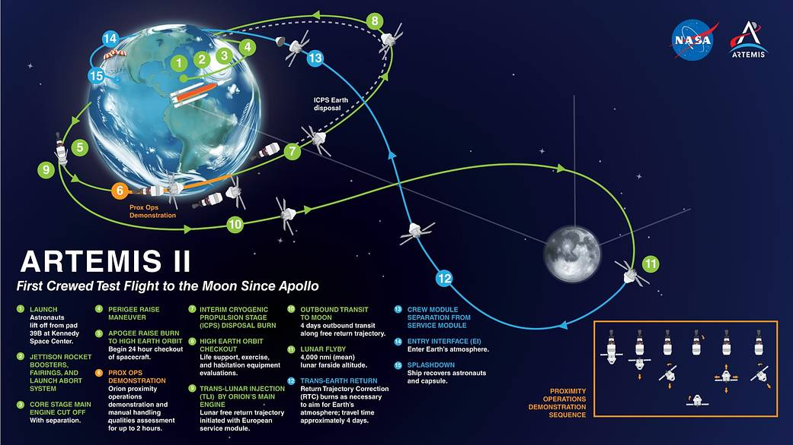

Live News
Live Mission View
Artemis II is the first crewed flight of NASA's SLS rocket and Orion spacecraft — the first humans bound for deep space since Apollo 17 in 1972. Four astronauts confirm all spacecraft systems work in the deep-space environment before Artemis III attempts a lunar landing.

After launch from Kennedy Space Center, a Translunar Injection (TLI) burn sends Orion onto a free-return path. No lunar-orbit-insertion burn is needed — the Moon's gravity naturally bends the trajectory back to Earth. The orange arc is the path already flown; blue is the planned route ahead.
Live updates from the NASA Artemis news feed. Images from the NASA Images API.
Trajectory is a stylised approximation. Checkpoint times and distances are real NASA mission data.
Live News